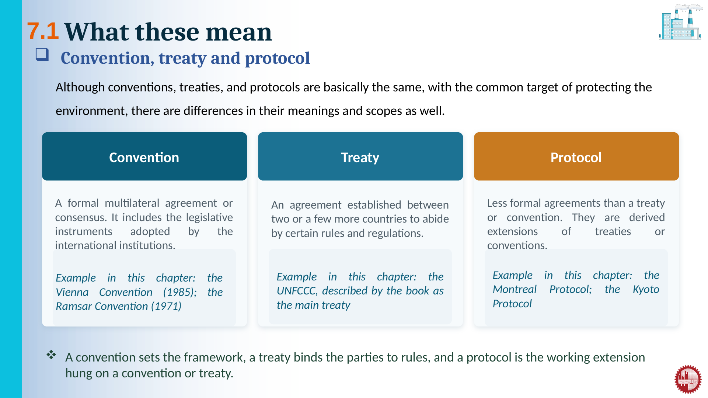

Chapter 7 covers four major international environmental frameworks: the Montreal Protocol (ozone), Kyoto Protocol (climate change), Ramsar Convention (wetlands), and Paris Agreement (climate). RSI sir's instruction: for Kyoto Protocol (§7.3), use slides only; for the rest, use the book, slides and lecture notes.
| Protocol / Convention | Year Adopted | Year in Force | What it Protects |
|---|---|---|---|
| Montreal Protocol | 1987 | 1989 | Ozone layer — phases out CFCs, halons |
| Kyoto Protocol | 1997 | 2005 | Climate — binding GHG cuts for Annex I nations |
| Ramsar Convention | 1971 | 1975 | Wetlands of international importance |
| Paris Agreement | 2015 | 2016 | Climate — all nations submit NDCs, <2°C target |
| Term | Definition | Example |
|---|---|---|
| Convention | A formal multilateral agreement between nations; a broader framework setting out principles | Ramsar Convention; Vienna Convention |
| Treaty | A binding agreement between nations that establishes rules; must be ratified to enter into force | UNFCCC (Framework Convention on Climate Change) |
| Protocol | A specific, supplementary agreement derived from a parent convention; adds detail or binding commitments | Montreal Protocol (derived from Vienna Convention); Kyoto Protocol (derived from UNFCCC) |

Convention → Treaty → Protocol hierarchy — definitions and examples
| Fact | Detail |
|---|---|
| Full name | Montreal Protocol on Substances that Deplete the Ozone Layer |
| Adopted | September 16, 1987, Montreal, Canada |
| Entered into force | January 1, 1989 |
| Purpose | Phase out production and consumption of ozone-depleting substances (ODS) |
| Coverage | 197 parties — universally ratified |
| Ozone Day | September 16 (International Day for the Preservation of the Ozone Layer) |
| Substance | Use | Phase-Out Deadline |
|---|---|---|
| CFCs (Chlorofluorocarbons) | Refrigerants, aerosol propellants, foam blowing | By 2000 |
| Halons | Fire suppression agents | By 2000 |
| Carbon Tetrachloride (CCl₄) | Solvent, fire extinguishers | By 2000 |
| Methyl Chloroform (1,1,1-trichloroethane) | Industrial solvent, cleaning agent | By 2005 |
| HCFCs (Hydrochlorofluorocarbons) | CFC replacement refrigerants | By 2030 (developed); 2040 (developing) |
Added HFCs (hydrofluorocarbons) — CFC replacements that are potent greenhouse gases — to the Montreal Protocol phase-down schedule. Entered into force 2019.
| Fact | Detail |
|---|---|
| Adopted | COP-3, Kyoto, Japan — December 1997 |
| Opened for signature | March 16, 1998 |
| Entered into force | February 16, 2005 |
| Why delayed to 2005? | Required ratification by countries covering ≥55% of Annex I emissions. Russia ratified November 2004, triggering entry into force |
| First commitment period | 2008–2012 |
| Second commitment period | 2013–2020 (Doha Amendment 2012) |
| Target | Annex I countries cut GHGs by 5.2% below 1990 levels |
| Succeeded by | Paris Agreement, adopted December 2015, in force November 2016 |
| GHG | Main Source | GWP (CO₂ = 1) |
|---|---|---|
| Carbon Dioxide (CO₂) | Fossil fuel combustion, deforestation | 1 |
| Methane (CH₄) | Agriculture (rice paddy, cattle), landfills, natural gas | 25 |
| Nitrous Oxide (N₂O) | Fertilizers, combustion, industrial processes | 298 |
| Sulfur Hexafluoride (SF₆) | Electrical insulation | 22,800 |
| HFCs (Hydrofluorocarbons) | Refrigerants (CFC replacements) | Varies (dozens to thousands) |
| PFCs (Perfluorocarbons) | Aluminum smelting, semiconductors | Varies (thousands) |
| Category | Countries | Obligation |
|---|---|---|
| Annex I | Industrialized nations + economies in transition (EU, USA, Japan, Russia, Canada, Australia, etc.) | Legally binding reduction targets (~5.2% below 1990 levels) |
| Non-Annex I | Developing countries: India, China, Bangladesh, Brazil, etc. | No binding targets — voluntary commitments only |
| Fact | Detail |
|---|---|
| Adopted | February 2, 1971, Ramsar, Iran |
| Entered into force | December 21, 1975 |
| Contracting Parties | 172 countries |
| Ramsar Sites (worldwide) | 2,500+ sites covering approximately 2.6 million km² |
| Secretariat | Gland, Switzerland (near Geneva) |
| World Wetlands Day | February 2 (anniversary of the convention's signing) |
Ramsar defines wetlands broadly: "areas of marsh, fen, peatland or water, whether natural or artificial, permanent or temporary, with water that is static or flowing, fresh, brackish or salt, including areas of marine water the depth of which at low tide does not exceed six metres."
| Site | Year Designated | Notes |
|---|---|---|
| Sundarbans | 1992 | World's largest mangrove forest; shared with India; also a UNESCO World Heritage Site |
| Hakaluki Haor | 1999 | Largest haor in Bangladesh; in Moulvibazar & Sylhet districts |
| Tanguar Haor | 2000 | Sunamganj district; critical for migratory waterfowl; declared an Ecologically Critical Area |
| Fact | Detail |
|---|---|
| Adopted | December 12, 2015, Paris, France (COP-21) |
| Entered into force | November 4, 2016 |
| Temperature target | Limit global warming to well below 2°C above pre-industrial levels; pursue efforts to limit to 1.5°C |
| Key mechanism | NDCs (Nationally Determined Contributions) — each country sets its own plan |
| Who commits? | All countries — both developed and developing (unlike Kyoto which only bound Annex I) |
| Successor to | Kyoto Protocol (2nd commitment period ended 2020) |
| Feature | Kyoto Protocol | Paris Agreement |
|---|---|---|
| Who commits | Annex I countries only | All countries (universal) |
| Targets | Legally binding reduction targets | Self-determined NDCs (flexible) |
| Enforcement | Compliance mechanism with penalties | Transparency framework; no penalties |
| Developing nations | No binding targets (India, China, BD) | Voluntary NDCs required from all |
The Ramsar Convention is an international treaty to protect wetlands. Full name: "Convention on Wetlands of International Importance especially as Waterfowl Habitat."
Key details: Adopted February 2, 1971, in Ramsar, Iran. Entered into force December 21, 1975. 172 contracting parties. Over 2,500 sites covering ~2.6 million km² worldwide. Secretariat in Gland, Switzerland. World Wetlands Day is February 2.
Three Ramsar sites in Bangladesh:
The Kyoto Protocol was adopted at COP-3 in Kyoto, Japan in December 1997 and entered into force on February 16, 2005 (after Russia ratified in November 2004). It is a protocol under the UNFCCC that set legally binding GHG reduction targets for industrialized nations.
Targets: Annex I countries must reduce combined GHG emissions by an average of 5.2% below 1990 levels during the first commitment period (2008–2012).
Six GHGs regulated: CO₂, CH₄, N₂O, SF₆, HFCs, and PFCs.
Annex I vs Non-Annex I: Annex I countries (industrialized nations: EU, Japan, Russia, Australia, etc.) have legally binding reduction targets. Non-Annex I countries (developing nations: India, China, Bangladesh) had no binding targets under Kyoto — this was the fundamental North-South equity principle. The USA never ratified the Protocol.
Kyoto was succeeded by the Paris Agreement (2015, in force 2016), which applies universally to all countries through Nationally Determined Contributions (NDCs).
The Montreal Protocol on Substances that Deplete the Ozone Layer was adopted on September 16, 1987, in Montreal, Canada, and entered into force January 1, 1989. It was developed under the Vienna Convention (1985) framework. It is the first universal environmental treaty — ratified by all 197 UN member states.
Purpose: Phase out the production and consumption of ozone-depleting substances (ODS) that destroy the stratospheric ozone layer.
Phase-out schedule (developed nations):
The protocol has been highly successful — the ozone layer is recovering and expected to return to 1980 levels by approximately 2060.
A Convention is a formal multilateral agreement between nations that establishes a broad framework of principles and goals. Example: Vienna Convention (1985) for ozone protection; Ramsar Convention (1971) for wetlands.
A Treaty is a binding legal agreement between two or more nations that establishes specific rules. It must be ratified by signatory states to enter into force. Example: UNFCCC (United Nations Framework Convention on Climate Change, 1994).
A Protocol is a supplementary, more specific agreement that is attached to a parent convention. It adds binding targets or detailed action plans. Example: Montreal Protocol (derived from Vienna Convention); Kyoto Protocol (derived from UNFCCC).
The hierarchy is: Convention sets the framework → Protocol adds binding commitments.